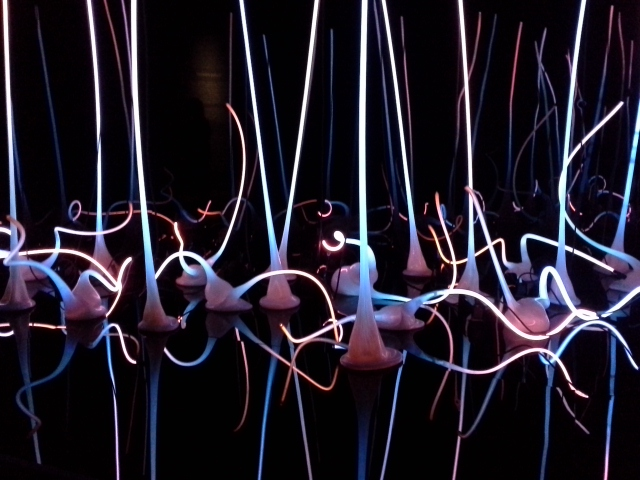
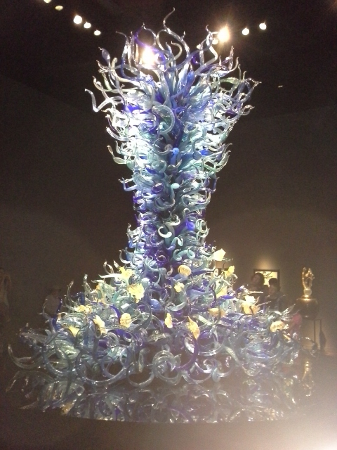
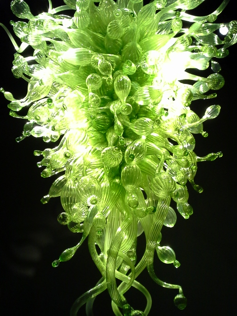
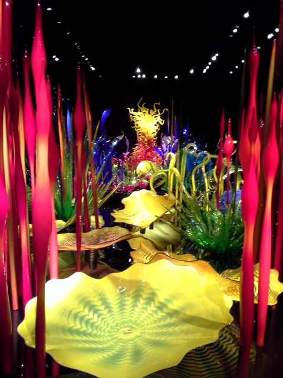
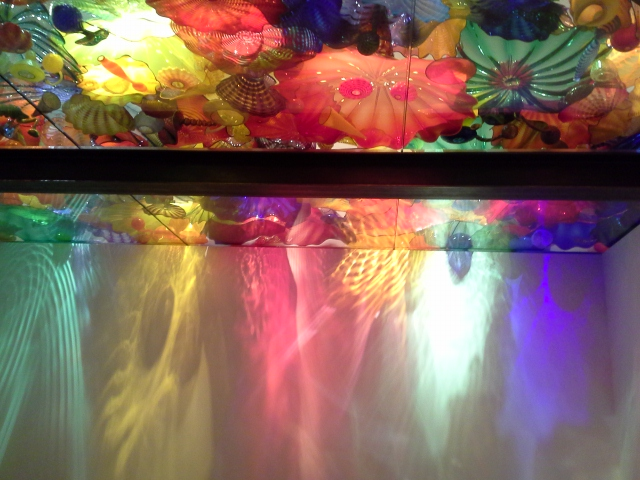
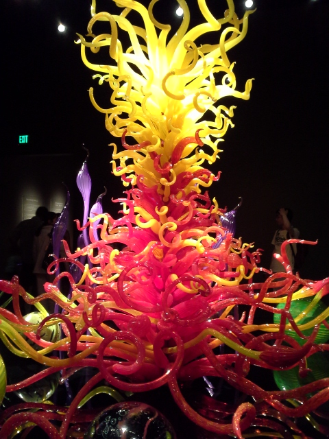
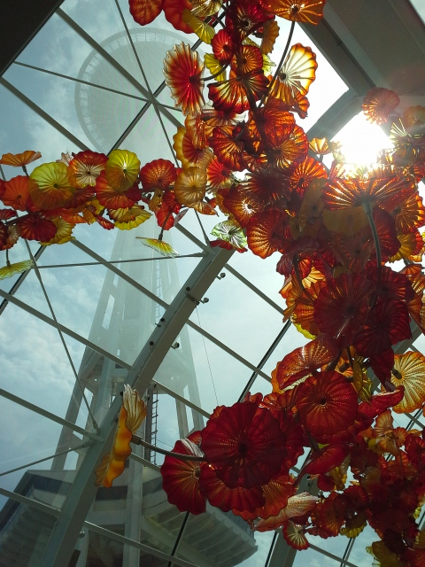

First exhibit in the galleries - a combination of glass and light
Aquatic glass sculpture
An abstract representation of a boat filled with glass balls
Green chandelier type ceiling fixture

Large indoor gardern-like display
The classic Chihuly glass ceiling
Glass sculpture resembling a firey inferno
Chihuly's large sculpture hanging in the glass house through which the Space Needle can be seen